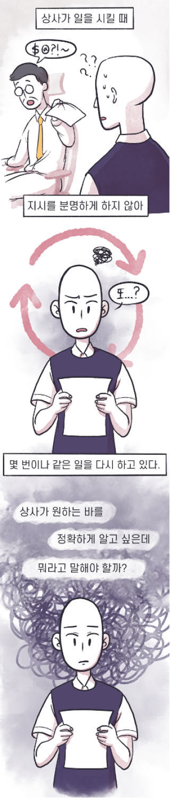

1
/6
본 설문은 직장인 스트레스 상황에서 각각 어떻게 대처하고 행동하는지 알아보려는 목적으로 실시됩니다.
각 문항을 읽고 제시되는 질문에 답변해주세요.
35. 다음 상황에서 당신은 어떻게 말할 것 같습니까?

내가 엉망으로 대답했구나. 나 찍혔다.
내가 잘못 대답했나 보네.
내가 한 말이 원하는 답변이 아니었나?
다른 사람 의견이 궁금하신가 보네. 다른 사람은 어떤 답변을 하는지 들어보자.
[다음]
버튼을 누르면 자동으로 저장됩니다.
다음